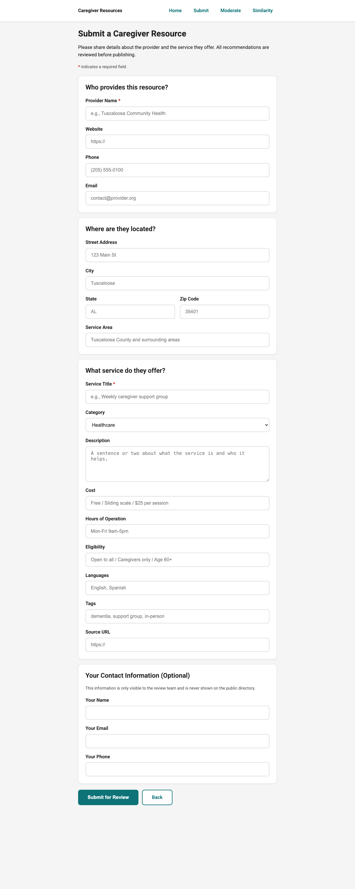
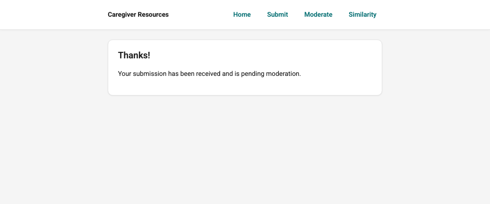
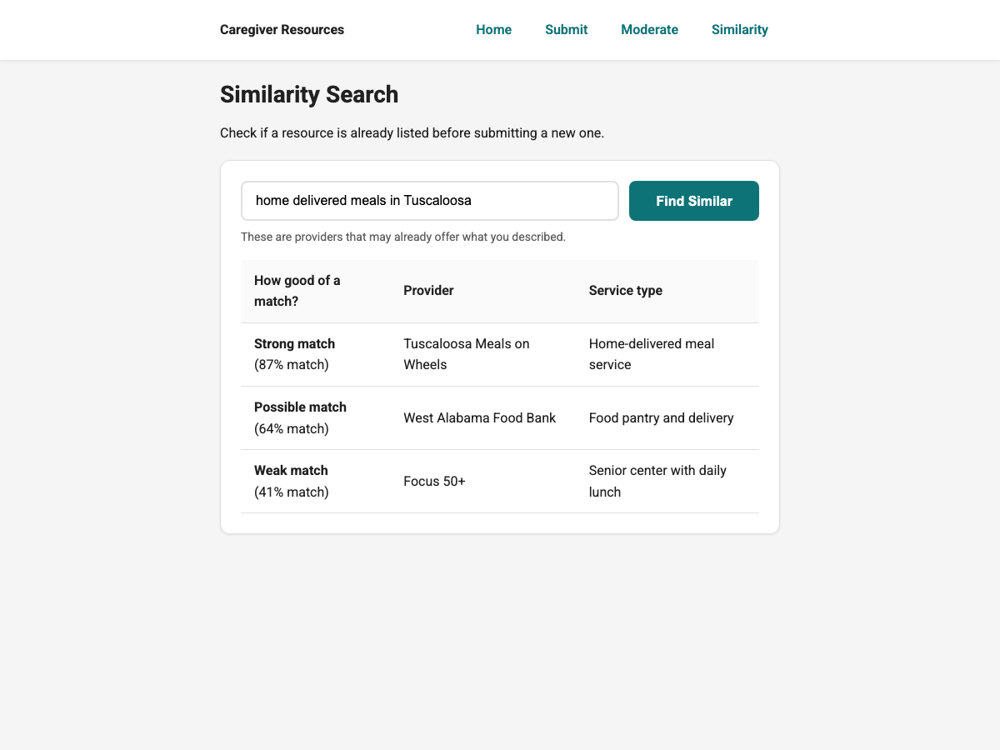

Step-by-step guide for non-technical stakeholders to use the completed CareBot functionality. For a plain-language guide aimed at caregivers submitting a resource, see the User guide (userguide.md).
Who this guide is for
Public users: submit resource recommendations
Staff / moderators: review submissions and maintain data quality
Public: submit a resource recommendation
Open the public submission page (linked from the site navigation, if enabled).
Fill out the resource information (name/title, location, description, eligibility, etc.).
Submit the form.
What happens next: submissions do not immediately appear publicly. They go to the moderation queue for review.

Public submission form

Confirmation after submission
Staff: log in
Open the staff login page.
Sign in with the staff credentials created by the team (Django user accounts).
There is no “Sign in with Google” unless OAuth is added later.
Staff: review the moderation queue
Navigate to the moderation queue page (typically under /manage/…).
Select a submission to review details.
Use similarity suggestions to detect duplicates.
Goal: maintain a clean catalog by avoiding duplicate listings and merging data where appropriate.

Similarity search results (used to detect duplicates)
Staff actions: approve, merge, reject
Approve: accept the submission as a new resource listing.
Merge: combine submission info into an existing listing (preferred when the submission is a duplicate).
Reject: decline submissions that are inappropriate or invalid.
Tip: use merge when the same organization/resource already exists, even if the submission adds extra details.
Optional: AI chat feature
If chat is enabled for your deployment, it requires an operator-provided API key (see Run & deploy and FAQs).
If no key is configured, the system should fail gracefully (disabled state or safe error message).
Accessibility & inclusive design notes
Readable layout: clear typography and spacing to support low-vision users.
Large targets: controls designed for users with limited dexterity (“shaky hands” goal).
Clear control intent: buttons vs. checkboxes vs. dropdowns used consistently.